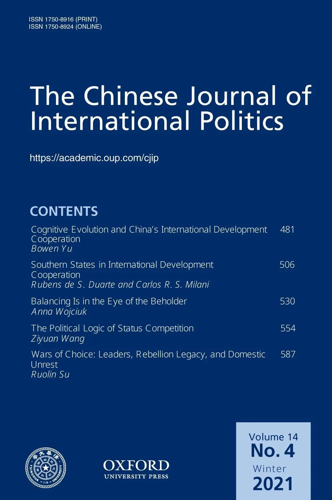
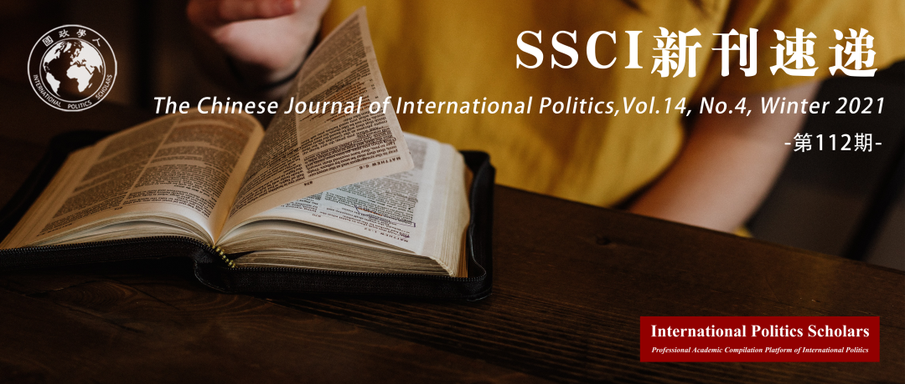

收录于合集 #新刊速递 123个


期刊简介
《中国国际政治季刊》( The Chinese Journal of International Politics )创始于2006年，现任主编孙学峰教授，是由牛津大学出版社每季度出版的经同行评议的学术期刊，旨在推进系统的和严谨的国际关系研究，提供经同行评审的原创研究文章和分析评论文章。该刊致力于为学界提供一个智识对话和反思性讨论的论坛，主要涉及但不限于与中国或东亚国际关系有关的议题，目前该刊影响因子为3.649。

本期目录
1. 认知进化与中国的国际发展合作
Cognitive Evolution and China’s International Development Cooperation
2. 国际发展合作中的南方国家：从争论到规范概念
Southern States in International Development Cooperation: From Contestation to Norm Conception
3. 旁观者眼中的制衡：解释晚清时期的关键案例
Balancing Is in the Eye of the Beholder: Explaining the Critical Case of Late Imperial China
4. 国家地位竞争的政治逻辑：领导人、地位权衡和1949-1965年中国的对越政策
The Political Logic of Status Competition: Leaders, Status Tradeoffs, and Beijing’s Vietnam Policy, 1949–1965
5. 选择之战：领导人、叛乱后遗症与国内动荡
Wars of Choice: Leaders, Rebellion Legacy, and Domestic Unrest
01
认知进化与中国的国际发展合作
标题 ：Cognitive Evolution and China’s International Development Cooperation
作者： Bowen Yu（余博闻），复旦大学国际关系与公共事务学院讲师。
摘要： 中国的国际发展合作（IDC）方式一直在不断演变。二十一世纪的前十年里，中国的IDC采用了以需求/项目为中心的方法，专注于基础设施领域，并将援助与商业结合起来。自“一带一路”倡议启动以来，由于顶层设计、部门规划和项目实施的高标准日益受到重视，现有的IDC模式在实施方法层面发生了变化。如何解释这些变化？与传统的物质—功能主义路径不同，本文将中国IDC的发展归因于认知进化——一种推动规范和实践变化的共同体内集体学习机制。认知进化包括以下三个相互关联的过程：不确定性的积累、实验和选择。三个可能塑造认知进化轨迹的因素如下：正统规范的遗产、可转移的本土思想的适用性以及对候选观念的表现的共有解释。二十一世纪前十年的IDC模式建立两个基础之上：批判性反思毛泽东时代的国际主义对外援助模式和IDC政策界对中国发展经验的解释和移植。由于“一带一路”倡议希望产生更实质性、更加可持续的发展影响，这种以需求/项目为中心的IDC模式的方法面临着新的变革压力。
China’s approach to International Development Cooperation (IDC) has been one of continuous evolution. The 2000s version of Chinese IDC applied a request-/project-centrism methodology, focused on the infrastructure sector, and mixed aid with business. Since the launch of the Belt and Road Initiative (BRI), the methodological dimension of the existing IDC model has changed by virtue of a growing emphasis on top-level design, sectoral programmes, and high standards for project implementation. How to explain these changes? Different from the conventional material-functionalist approaches, this article attributes the development of China’s IDC to cognitive evolution—an intra-community collective learning mechanism that drives changes in norms and practices. Cognitive evolution consists of the following three interconnected processes: uncertainty build-up; experimentation; and selection. Three factors that may shape the trajectories of cognitive evolution are as follows: the legacy of orthodox norms; the availability of transferable local ideas; and the communal interpretation of candidate ideas’ performance. The IDC model of the 2000s was constructed based on critical reflections on the internationalist foreign aid model of the Mao era and on the IDC policy community’s interpretation and transplantation of China’s development experience. The methodology of this IDC model—request-/project-centrism—has come under new pressure for change due to the BRI’s ambition to engender more substantial and sustainable developmental impact.
02
国际发展合作中的南方国家：从争论到规范概念
标题： Southern States in International Development Cooperation: From Contestation to Norm Conception
作者： Rubens de S Duarte，巴西陆军指挥和参谋学院兼职；Carlos R S Milani，里约热内卢州立大学发展研究博士。
摘要： 南方国家为什么以及如何在国际援助和合作领域构想规范，以建立一个象征性制度从而挑战北方国家主导的发展议程？为回答这一问题，本文回溯了有关规范的生命周期的文献，并超越了早期的扩散、地方化、从属化、厌恶、拒绝和争论等概念。本文认为国际- 国内关系是规范概念主要催化剂，通过对南方国家的规范作用进行基于语境的细致分析，对现有的规范传播研究做出贡献。在国际和国内政治的辩证关系基础上，本文驳斥了简单的规范接受者和规范制定者的二元关系，即前者被认为是南方国家唯一可能的角色。本文从南方国家的角度出发，探讨了南方行为体为在区域和全球范围内创造和传播其发展合作规范而动员的一系列渠道、机制和平台。
Why and how do Southern countries conceive norms in the field of international aid and cooperation in an attempt to craft a symbolic regime that challenges Northern-oriented development agendas? To answer this question, this article engages with the literature on the life cycle of norms and goes beyond the earlier concepts of cascade, localisation, subsidiarity, reluctance, rejection, and contestation. As it considers the international–domestic nexus as the main catalyst for norm conception, this paper contributes to the existing literature on norm circulation by providing a more nuanced and context-led analysis of Southern countries’ normative role. In building upon the dialectics between international and domestic politics, this paper refutes the simple norm-taker/norm-maker dyad wherein the former is regarded as the South’s only possible role. Written from a Southern perspective, this paper also explores a range of channels, mechanisms, and platforms that Southern actors mobilise to create and diffuse their development cooperation norms both regionally and globally.
03
旁观者眼中的制衡：解释晚清时期的关键案例
标题： Balancing Is in the Eye of the Beholder: Explaining the Critical Case of Late Imperial China
作者： Anna Wojciuk，华沙大学国际关系副教授。
摘要： 制衡是现实主义路径下国家的主导行为。排除国家（内部）凝聚力低的情况，当均势朝己方不利的方向转移时，国家将会迅速而准确地进行制衡。本文解释了一个关键性困惑：在19世纪40年代到1900年之间，中国为什么没有对西方军事干预的外部冲击做出更有力的制衡反应？作者认为，为了进行制衡，中国需要抛弃儒家的观念结构，以类似于当代现实主义的观念结构取而代之。此类结构是在中国版的社会达尔文主义出现后被采用的。因此，只有当国际体系结构与受影响的行为体的观念结构保持同步时，制衡才会发生。
Balancing is at the core of the realist approach to the behaviour of states in international relations. Excluding cases of state incoherence, states are expected to balance promptly and infallibly whenever the balance of power shifts to their disadvantage. In this article, I explain a critical puzzle: why did China not respond to the external shock of Western military intervention between the 1840s and 1900 with a more robust balancing response? I argue that, in order to start balancing, China needed to abandon its Confucian ideational structures and replace them with ones resembling contemporary realism. I demonstrate that such structures were adopted after the acquisition of Chinese versions of social Darwinism. My argument, therefore, is that balancing occurs only as long as the structure of the international system is in sync with the affected actors’ ideational structures.
04
国家地位竞争的政治逻辑：领导人、地位权衡和1949-1965年中国的对越政策
标题： The Political Logic of Status Competition: Leaders, Status Tradeoffs, and Beijing’s Vietnam Policy, 1949–1965
作者： 王梓元，外交学院国际关系研究所讲师。
摘要： 研究国家间地位政治就很难回避以下两个宽泛的问题：追求国家地位的愿望如何驱动一个国家的外交政策？领导人何时会将国际冲突视为维护国家地位的工具？传统观点认为，羞辱性的国际事件使得领导人对国家地位更为敏感，从而增加领导人进行地缘政治竞争的倾向，并为这些国家内部鼓动挑衅性海外政策提供动力。这种说法在经验上和理论上都存在缺陷。作为回应，作者强调了这样一个事实，即领导人必须将其对国际地位的主张与国家安全和政治生存的需要相协调。以下是作者的两个假设：第一个假设是，在羞辱性的国际事件发生后，领导人倾向于放弃挑衅性政策。这是因为挑衅性政策可能加剧国外的冲突，从而危及到领导人在国家安全和国内政治方面的利益；第二个假设是，如果采取温和的措施有可能促使敌对势力威胁到本国与附庸国的关系，或者激起国内反弹，那么领导人就可能会采取挑衅性政策。中国在1949-1965年的对越政策为作者的假设提供了重要依据，并且对理论研究和当前形势都有所启示。
Students of status politics among nations could hardly evade two broad questions: how do status aspirations drive state foreign policy? And when do leaders consider international conflict a vehicle for status assertion? Conventional wisdom holds that humiliating international events could sensitize leaders to great-power status, increase their propensity for geopolitical competition, and fuel domestic agitation for provocative policies abroad. This assertion is empirically and theoretically flawed. In response, my argument underscores the fact that leaders often have to reconcile their status claims with the imperatives of national security and political survival. Two hypotheses follow. First, in the aftermath of humiliating international events, leaders tend to abstain from provocative policies. That is because such policies risk escalation of conflicts abroad which could jeopardize leaders’ interests in national security and domestic political survival. However, should the moderate approach either encourage the rival power to threaten leaders’ ties with a client state or stir a domestic backlash, leaders may pursue a provocative policy (a second hypothesis). Beijing’s Vietnam policy in 1949–1965 provides crucial evidence for these hypotheses, which carry implications for theory and current events.
05
选择之战：领导人、叛乱后遗症与国内动荡
标题： Wars of Choice: Leaders, Rebellion Legacy, and Domestic Unrest
作者： 苏若林，上海交通大学国际与公共事务学院助理教授，美国宾夕法尼亚大学国际关系与比较政治博士，研究兴趣为国际安全，外交政策分析，政治心理学。
摘要： 现有研究表明，先前参与叛乱的领导人比没有此类经历的领导人更容易引发国际冲突。本文考察了先前参与叛乱是否会导致领导人在国内动乱期间引发国际冲突。本文提出了一种偏好修正方法，并认为叛乱领导人在国内动乱期间的政策选择是其预先存在的偏好和环境因素的产物。具体而言，本文认为，在国内动乱期间，先前参与叛乱的领导人表现出的，对外部冲突比其他领导人的更强的偏好，取决于国内问题的严重程度。当面临严重的内部动乱时，叛乱领导人比其他领导人更不可能卷入国际冲突，因为严重的国内冲突会影响叛乱领导人的认知，进而影响其政策偏好。激烈的国内冲突使叛乱领导人倾向于同时参与国际冲突和施加国内举措，这在一定程度上抵消了他们最初将参与国际冲突作为唯一政策回应的政策偏好。相比之下，非叛乱领导人认为在严重的国内动荡期间参与国际冲突更有效，因此更有可能引发国际争端。本文对1875年至2000年间国内动乱中领导人发起国际军事争端的情况进行了统计分析，为这些论点提供了强有力的支持。
Existing studies suggest that leaders that have earlier been participants in rebellions have a higher propensity for international conflict than leaders with no such experience. This paper examines whether prior involvement in rebellions will induce leaders to initiate international conflicts during domestic strife. I propose a preference modification approach and argue that rebel leaders’ policy choices during domestic unrest are a product of their pre-existing preferences and contextual factors. Specifically, I claim that the greater preference for conflict abroad during domestic unrest that former rebel leaders display than do their fellow leaders is contingent on the severity level of domestic problems. When facing serious internal unrest, rebel leaders are less likely than their non-rebel counterparts to engage in international conflicts due to the effect that critical domestic strife will have on the former’s perceptions and thus their policy preferences. Intense domestic strife predisposes rebel leaders to engage in both international conflict and domestic measures, which to some extent neutralises their original policy preference of international conflict as the sole policy response. By contrast, non-rebel leaders perceive more efficacy in international conflict during severe domestic unrest and are more likely to initiate an international dispute in that case. Statistical analyses of the international militarised dispute initiations of leaders under domestic strife from 1875 to 2000 reveal strong support for these arguments.
编译 | 姚博闻 陈想 王川 董黛 曾庆鸣
审校 | 陈勇 谢菁
排版 | 何婕 云琪布日
文章观点不代表本平台观点，本平台评译分享的文章均出于专业学习之用, 不以任何盈利为目的，内容主要呈现对原文的介绍，原文内容请通过各高校购买的数据库自行下载。

国政学人
支持学术公益与知识传播
微信扫一扫赞赏作者 __赞赏
已喜欢，对作者说句悄悄话
取消 __
发送给作者
发送
最多40字，当前共字
上一页 1/3 下一页
长按二维码向我转账
支持学术公益与知识传播
受苹果公司新规定影响，微信 iOS 版的赞赏功能被关闭，可通过二维码转账支持公众号。